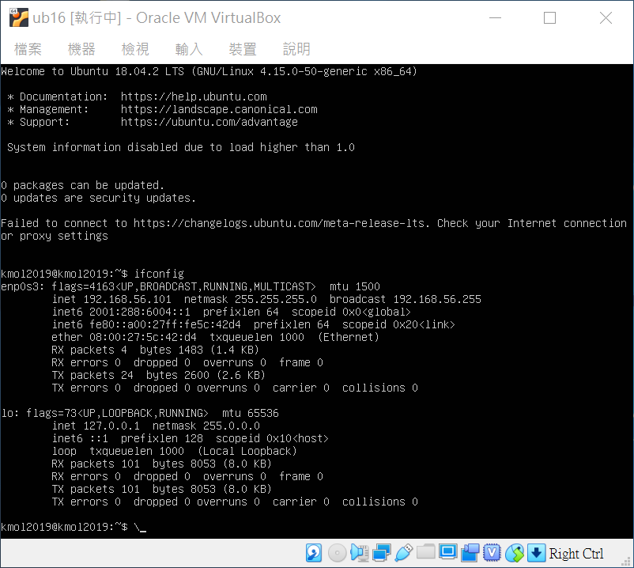
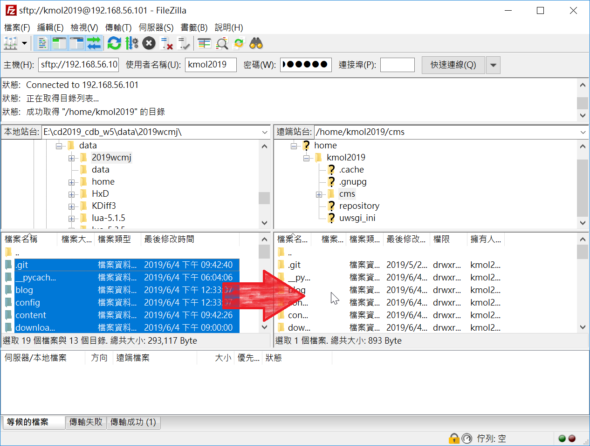
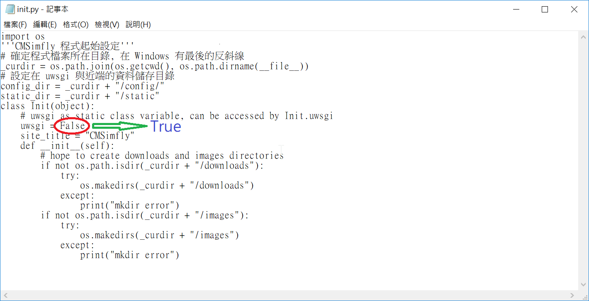
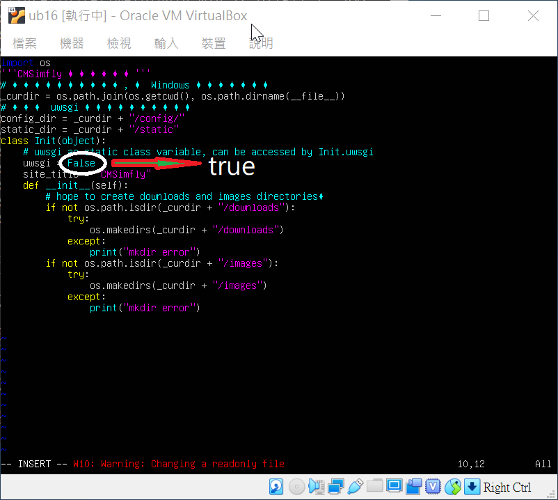
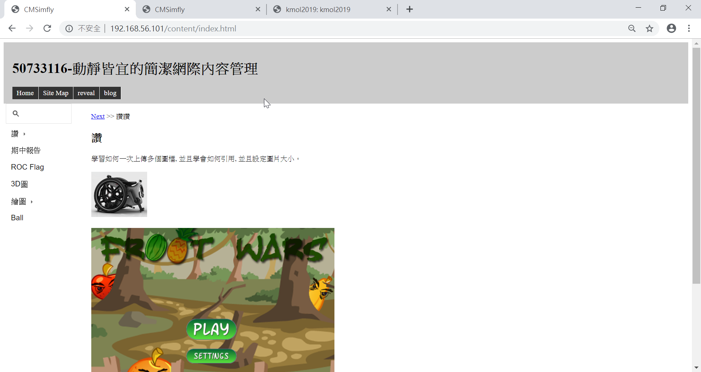
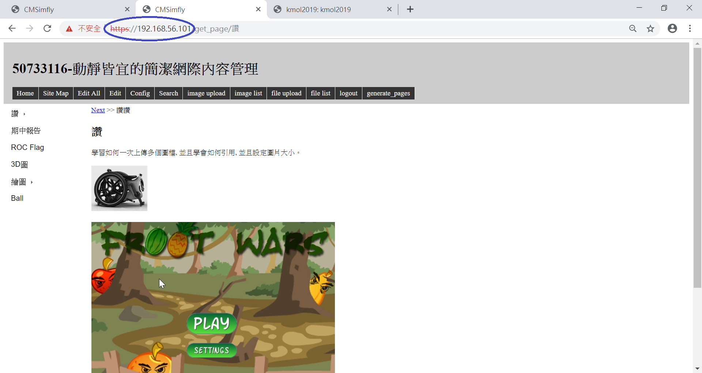
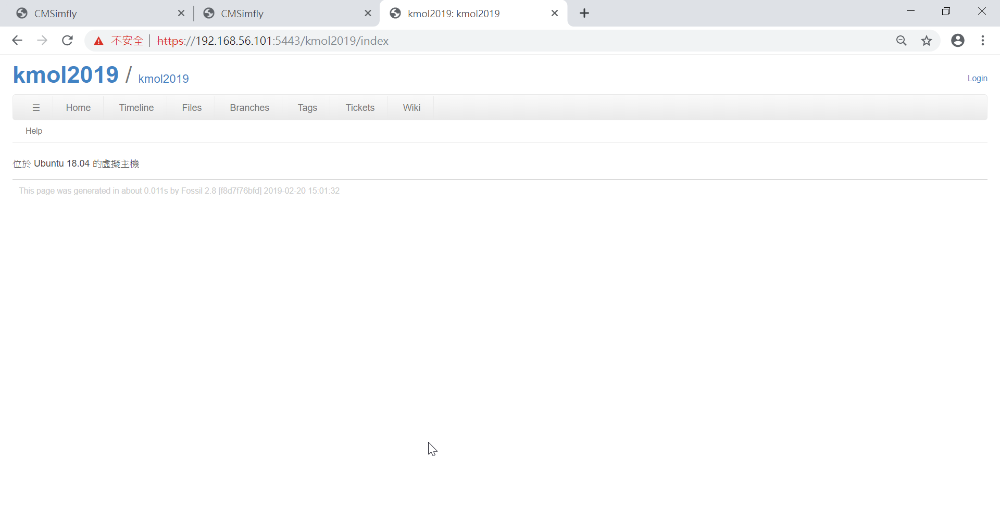

啟動，並輸入ifconfig查詢虛擬主機IP位址

打開FileZilla，把倉儲檔案複製到虛擬主機資料夾。

再修改init.py，把檔案裡的False改True，再傳送覆蓋本地檔案

或是直接在虛擬主機內修改，先輸入cd /home/kmol2019/cms，再輸入vi init.py進到編輯頁面，可能會出現E325: ATTENTION，輸入o或enter，按i進行編輯，把Flase改成true，按Esc退出編輯模式，輸入:wq !存檔。

到瀏覽器輸入網址，有以下三種
http://虛擬主機IP，即可進到個人靜態網站

https://虛擬主機IP，即可進到個人動態網站

https://虛擬主機IP:5443，即可進入Fossil網站
